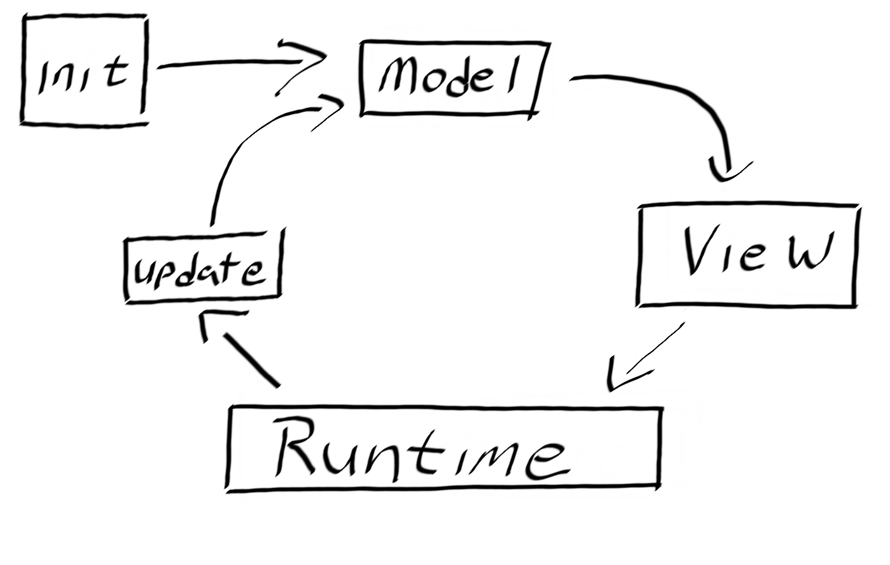
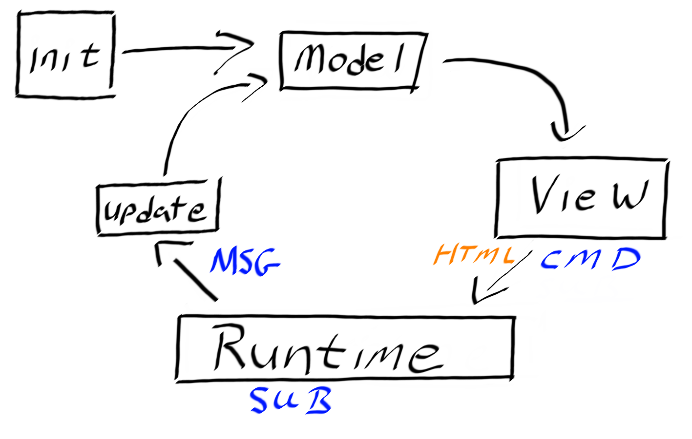

type ContactType =
| Twitter
| Blog
| GitHub
Full name: index.ContactType
| Blog
| GitHub
Full name: index.ContactType
union case ContactType.Twitter: ContactType
union case ContactType.Blog: ContactType
union case ContactType.GitHub: ContactType
val getContactInfo : _arg1:ContactType -> string
Full name: index.getContactInfo
Full name: index.getContactInfo
val id : x:'T -> 'T
Full name: Microsoft.FSharp.Core.Operators.id
Full name: Microsoft.FSharp.Core.Operators.id
Full Fun Web with SAFE Stack
About me
- Shane Charles
- White Light Computing, Inc.
- Functional programming enthusiast
- Board member for Winnipeg .Net UG
1: 2: 3: 4: 5: 6: |
|
You will see
- What is SAFE Stack
- Setup
- Fable + Elmish
- Saturn
- Azure
- Summary
You will not see
- Nice Aesthetics
- Good UX
- Any Security
SAFE Stack
- Web Stack
- F# in the front
- F# in the back
SAFE History
- Server
- Azure
- Fable
- Elmish
Server?
- Suave
- Azure
- Fable
- Elmish
+ Giraffe
choose [suave; giraffe]- Azure
- Fable
- Elmish
+ Saturn
choose [suave; giraffe; saturn]- Azure
- Fable
- Elmish
No Longer Suave
choose [giraffe; saturn]- Azure
- Fable
- Elmish
Current SAFE Defaults
- Saturn
- Azure
- Fable
- Elmish
Setup Requirements
- dotnet core (2.+)
yarnandnodefakecommand line tool
Installing Fake
dotnet tool install fake-cli -g
- Linux/OSx:
~/.dotnet/tools - Windows:
%USERPROFILE%\.dotnet\tools
Installing and Running SAFE
-
Command Line
- dotnet new -i SAFE.Template
- dotnet new SAFE
- fake build --target run

Fable
- F# to javascript compiler
-
Not limited to SAFE Stack
- can be used independently
- Recently released version 2
Elmish
- front-end paradigm
-
Elm Architecture
- Model
- View
- Update
Flow

Notifications
- Messages: Strongly typed
- Commands: state events
- Subscriptions: external events
Flow State

Required Functions
- init
- update
- view
CSS
-
Fulma
- Bulma bindings
- based on Flexbox
-
modifiers use a prefix
is-has-
Demos
Saturn
- Standalone Server
- Abstraction on Giraffe
- Inspired by Phoenix (Elixir)
- MVC pattern
Opinionated
-
Convention over configuration
- Dapper
- Simple.Migrations
-
Scaffolding scripts
dotnet saturncommand line tool
Computation Expressions
- pipeline
- controller
-
router
- formerly
scope
- formerly
Deploy to Azure
- Docker
-
App Service
- Create azure enabled project
- dotnet new SAFE --deploy azure
Azure App Service Setup
- Azure Active Directory
-
Create new App Registration
-
Required Permissions
- Enable "Windows Azure Service Management API"
- Copy Application ID
-
Required Permissions
Application Directory
1: 2: 3: 4: 5: |
|
More Detailed Instructions
- Azure Active Directory App Registration
- Detailed deploy instructions
Summary
-
SAFE Stack
- Still early but powerful
- Azure deployments
- Community driven
-
Elmish
- Model-View-Update architecture
-
Saturn
- Model-View-Controller
Extra Resources
Thank You
1: 2: 3: 4: 5: 6: |
|